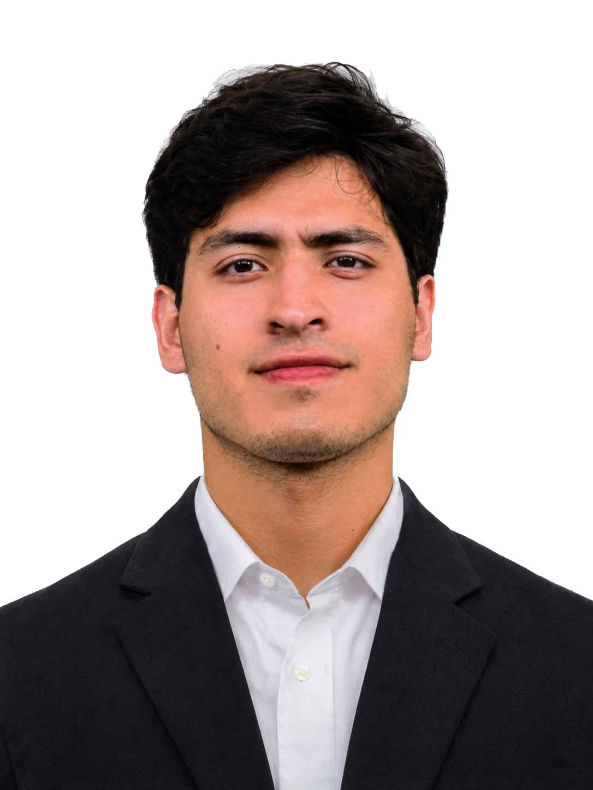
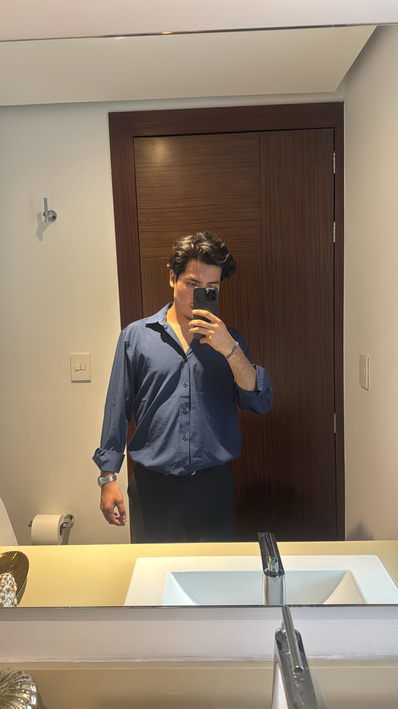
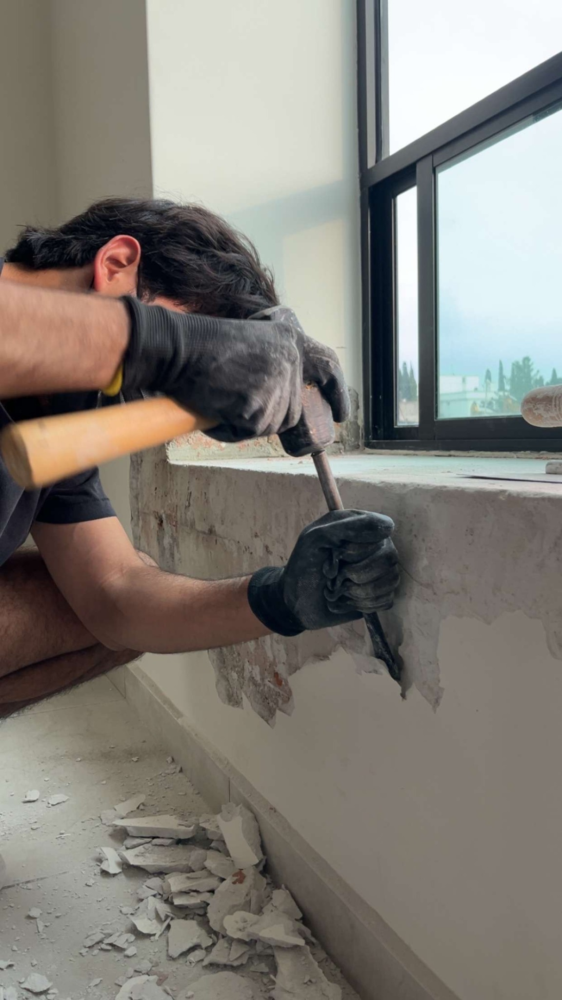
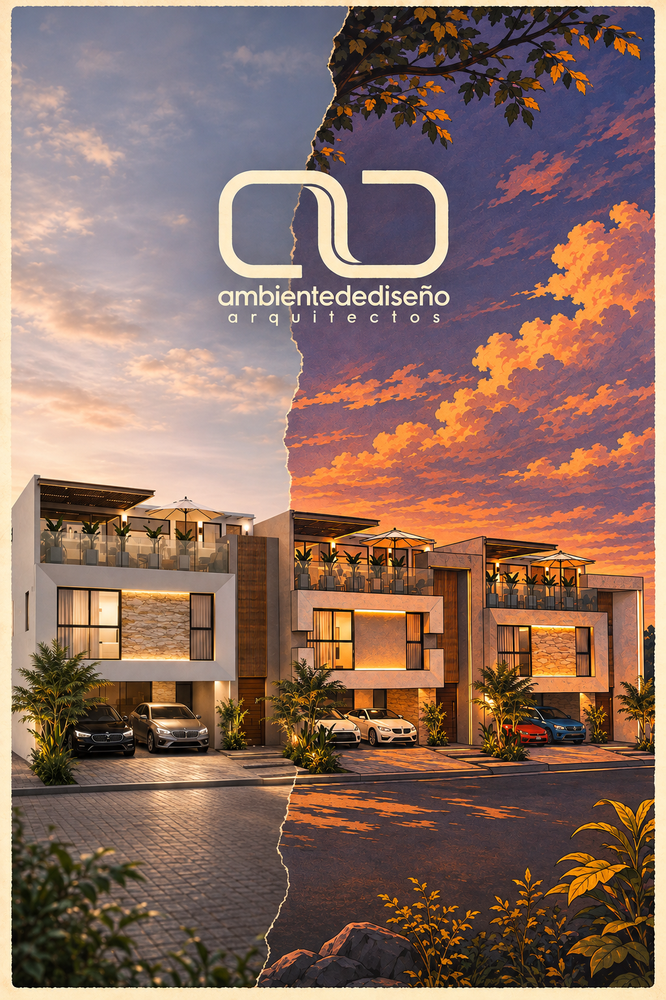
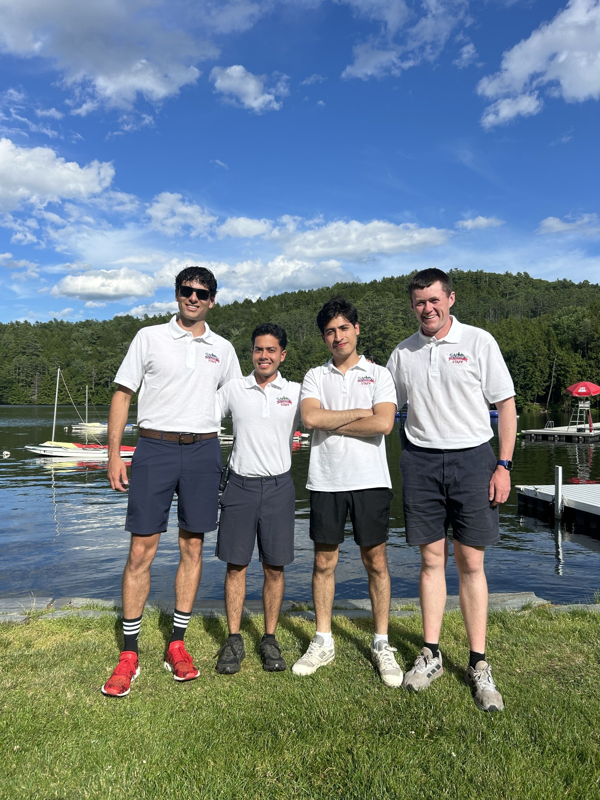

001 / EDITORIAL

I like testing ideas and working on turning them into something you can see, use or experience—always aiming to make it enjoyable.
EXPLORE SELECTED WORK
Different disciplines, real projects. Here are some of the ways I turn ideas into stories, products and spaces.


Index preview — dedicated project chapters will be developed using original work, photographs and verified case studies.

CREATIVE MIND. ENTREPRENEURIAL SPIRIT. ALWAYS LEARNING.
Soy Chema Durán. Me interesan las ideas que dejan de ser ideas y se convierten en algo que alguien puede ver, usar o vivir.
Me atraen el diseño, la arquitectura y los proyectos propios, pero también el trabajo físico que mantiene las cosas en marcha. He trabajado como dibujante en Puebla y en mantenimiento durante un verano en Vermont, Estados Unidos. Cada experiencia me ha enseñado algo distinto sobre responsabilidad y adaptación.
También he creado sitios web, desarrollado contenido y gestionado redes sociales para mis proyectos. Me gusta comunicarme con la gente: escuchar, explicar ideas con claridad y generar confianza para trabajar juntos.
Me adapto a distintos equipos, tareas y maneras de trabajar, sin perder lo que considero esencial: honestidad, respeto y responsabilidad. Quiero aprender de quienes tienen experiencia, entender lo que ya funciona y ayudar a mejorarlo. Sea un problema de diseño o una tarea operativa, mi compromiso es hacerla bien.

DOS EXPERIENCIAS LABORALES DIFERENTES. LA MISMA DISPOSICIÓN PARA APRENDER Y APORTAR.

PUEBLA / MÉXICODibujo arquitectónico · Lomas de Angelópolis, Puebla.

VERMONT / USATrabajo operativo y físico durante una temporada de verano en Estados Unidos.
 INDEPENDENT / MX
INDEPENDENT / MXDiseño, editorial y emprendimiento: ideas que también me toca llevar a la práctica.
Estoy abierto a oportunidades laborales en México y en el extranjero, en áreas creativas, técnicas u operativas. Mi prioridad es aportar valor, seguir aprendiendo y construir una trayectoria a través del trabajo bien hecho.
Me interesa una remuneración justa y un equipo donde pueda aprender, adaptarme y asumir responsabilidades reales.
PUEDO APRENDER UN OFICIO, SEGUIR UN SISTEMA O AYUDAR A MEJORARLO. LO QUE NO QUIERO ES DEJAR DE APRENDER.
Mi experiencia combina dibujo arquitectónico, trabajo operativo y proyectos independientes. Cada etapa representa nuevas habilidades, distintas responsabilidades y mucho aprendizaje.
EXPLORAR EXPERIENCIASCV FORMAL / DISPONIBLE BAJO SOLICITUD¿Tienes una oportunidad laboral, una propuesta o una idea que quieras compartir? Me encantará conocerla. Estas son las formas más sencillas de ponernos en contacto.
MÉXICO / OPORTUNIDADES NACIONALES E INTERNACIONALES
 003 / SPACE & FORM
003 / SPACE & FORM